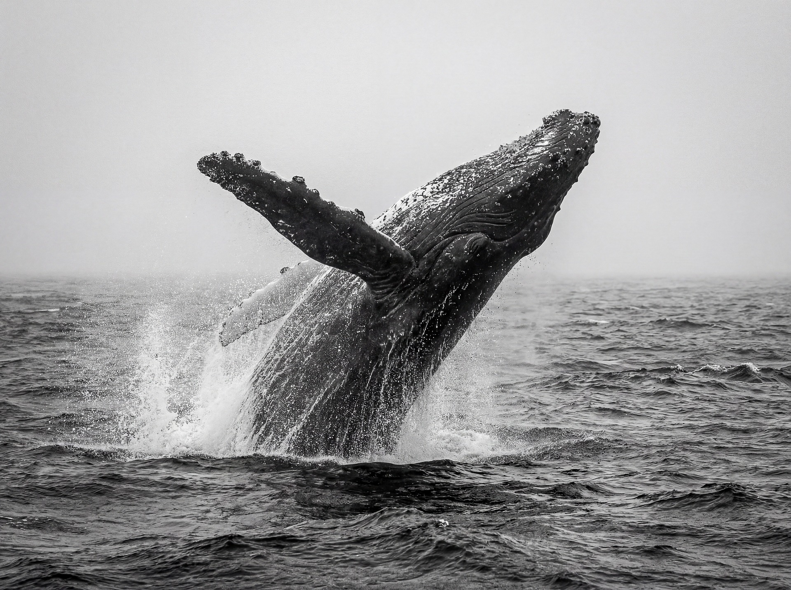

(Balaenoptera musculus)
La ballena es un mamífero marino de gran tamaño, conocida por su inteligencia, comunicación compleja y hábitos migratorios. Históricamente ha fascinado a los humanos y juega un papel importante en los ecosistemas marinos al mantener el equilibrio de las cadenas alimenticias y contribuir al ciclo de nutrientes. Gracias a su desarrollo cerebral y social, las ballenas pueden formar grupos organizados, aprender comportamientos y comunicarse mediante sonidos de baja frecuencia. Dependiendo de la especie, su esperanza de vida puede superar los 70 años, necesitando océanos limpios y abundancia de alimento, como krill y pequeños peces. Las ballenas presentan características físicas únicas, como su tamaño colosal, aletas, espiráculos y, en algunas especies, barbas o dientes especializados. Son animales sociales que muestran cuidado por sus crías y comportamiento cooperativo en manadas.
Características